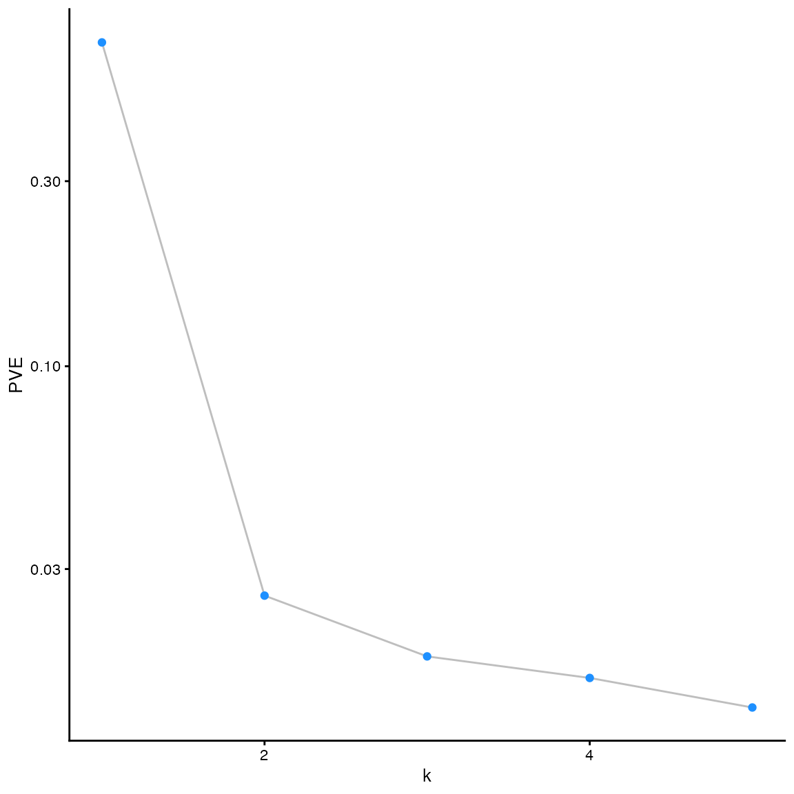
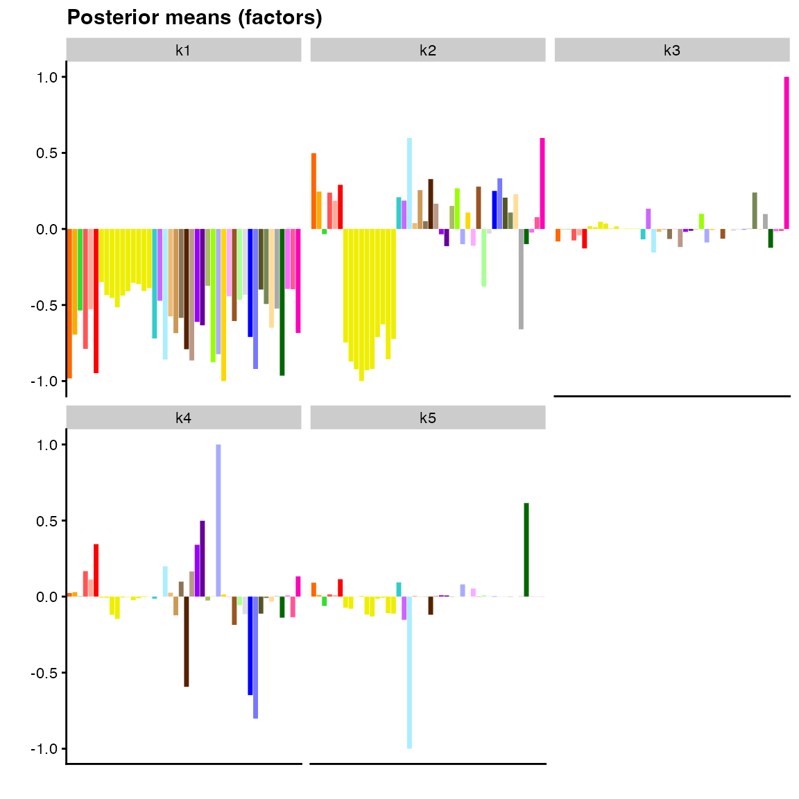
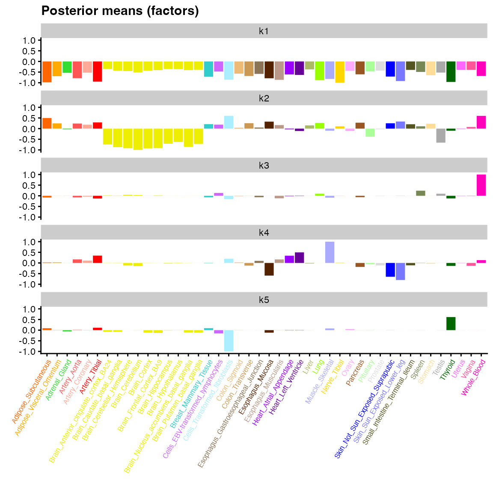
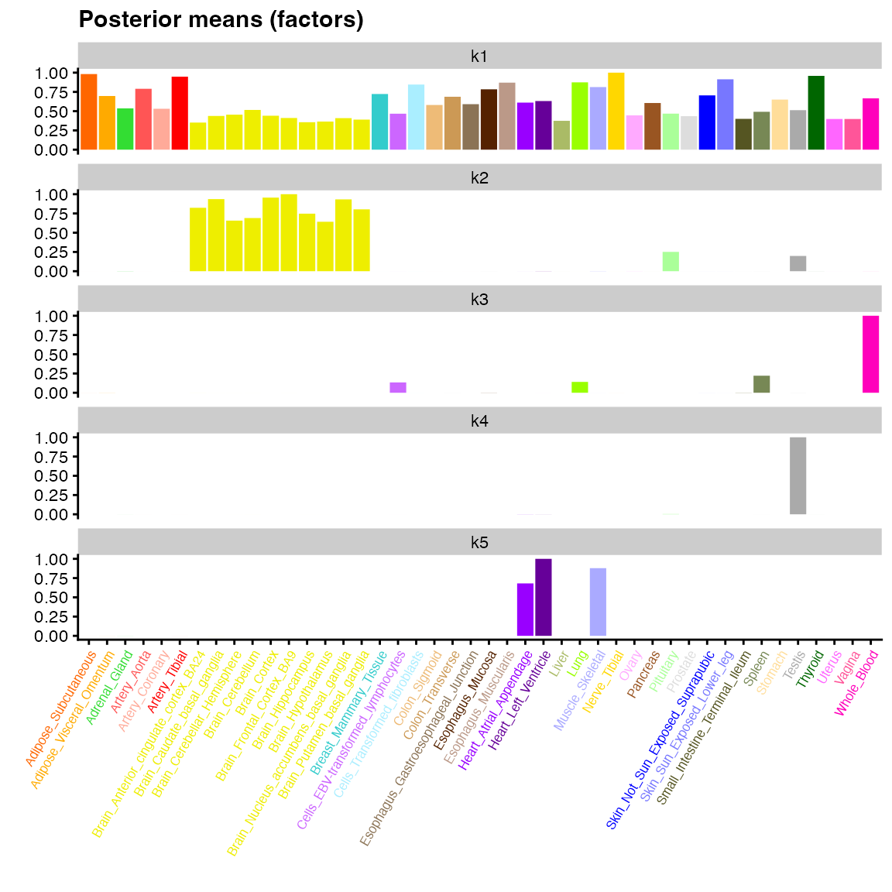

In addition to flashier and ggplot2, we
will make use of package cowplot below in order to arrange
plots into grids:
Empirical Bayes matrix factorization (Wang and Stephens, 2021) decomposes a data matrix \(Y \in \mathbb{R}^{n \times p}\) as \[ Y = LF' + E, \] with “loadings” \(L \in \mathbb{R}^{n \times K}\), “factors” \(F \in \mathbb{R}^{p \times K}\), and residual errors \[ e_{ij} \sim N(0, 1 / \tau_{ij}).\] The model puts priors on each factor and each set of loadings: \[f_{\cdot k} \sim g^{(f)}_k,\ \ell_{\cdot k} \sim g^{(\ell)}_k,\] with \(g^{(\ell)}_k\) and \(g^{(f)}_k\) assumed to belong to some families of distributions \(\mathcal{G}^{(\ell)}\) and \(\mathcal{G}^{(f)}\) and estimated using the data. The default choice of prior family for both factors and loadings is the family of point-normal distributions: \[ g \sim \pi_0 \delta_0 + (1 - \pi_0) N(0, \sigma^2), \] where both \(\pi_0\) and \(\sigma^2\) are free parameters. This family is especially useful when factors and loadings can be expected to be at least modestly sparse; in other settings, different prior families might be preferred.
To avoid over-parametrization, it is necessary to make some assumptions about the precision parameters \(\tau_{ij}\). The default assumption is that all \(\tau_{ij}\)s are equal: \[ e_{ij} \sim N(0, 1 / \tau).\]
Note that when the prior families \(\mathcal{G}^{(\ell)}\) and \(\mathcal{G}^{(f)}\) are closed under scaling (as is typically the case), then the model as formulated above is not identifiable, since we can scale each set of loadings \(\ell_{\cdot k}\) by any constant \(d_k \ne 0\) if we also scale factor \(f_{\cdot k}\) by \(1 / d_k\).
We can make the matrix factorization unique by writing \[ Y = LDF' + E, \] with the scales of loadings \(\ell_{\cdot 1}, \ldots, \ell_{\cdot K}\) and factors \(f_{\cdot 1}, \ldots, f_{\cdot K}\) constrained in some fashion (for example, by requiring \(\| \ell_{\cdot k} \|_2 = 1\) and \(\| f_{\cdot k} \|_2 = 1\) for all \(k\)). We refer to such a factorization as an LDF factorization.
gtex dataset and the flash()
function
Throughout this vignette, we will use the main flash()
function to produce a number of EBMF fits to dataset gtex,
which is comprised of a subset of the data used as the primary example
in Wang and Stephens (2021). The dataset is derived from data made
available by the Genotype Tissue Expression (GTEx) project (Lonsdale et
al. 2013), which provides \(z\)-scores
for assessing the significance of effects of genetic variants (“single
nucleotide polymorphisms” or SNPs) on gene expression across 44 human
tissues. To reduce the data to a more manageable size, Urbut et
al. (2019) chose the “top” SNP for each gene — that is, the SNP
associated with the largest (absolute) \(z\)-score over all 44 tissues. This process
yields a 16,069 by 44 matrix of \(z\)-scores, with rows corresponding to
SNP-gene pairs or “eQTLs” and columns corresponding to tissues. The
gtex dataset included in flashier is further
subsampled down to 1000 rows.
One potential aim in applying matrix factorization methods to the
gtex dataset is to analyze patterns of effect sharing. For
example, Wang and Stephens (2021) point out an EBMF factor that has
large values across brain tissues (cortex, cerebellum, basal ganglia,
etc.), but values much closer to zero for all non-brain tissues. We can
expect eQTLs that are loaded on this factor to affect brain and
non-brain tissues much differently. Other factors have large values for
a single tissue only (e.g., testis). We can expect eQTLs loaded on such
factors to be more or less tissue-specific.
To fit the EBMF model, we use function flash(), which
adds up to greedy_Kmax factor/loadings pairs using the
“greedy” algorithm described in Wang and Stephens (2021). In brief, the
algorithm adds new factor/loadings pairs one at a time, optimizing each
pair as it gets added without returning to re-optimize previously added
pairs. In other words, it finds the best rank-one fit; then the best
rank-two fit with the first factor/loadings pair fixed; then the best
rank-three fit with the first two factor/loadings pairs fixed; and so
on. The algorithm stops adding factor/loadings pairs when they fail to
yield an increase in the variational lower bound on the log likelihood
(or ELBO), and in this sense EBMF can “automatically” select the number
of factor/loadings pairs \(K\). Thus it
is often sufficient simply to set greedy_Kmax as high as is
practically manageable (the default is greedy_Kmax = 50).
Here, however, we will restrict the number of factor/loadings pairs in
order to ensure that the vignette can be run quickly:
data(gtex, gtex_colors)
fit_default <- flash(gtex, greedy_Kmax = 5)
#> Adding factor 1 to flash object...
#> Adding factor 2 to flash object...
#> Adding factor 3 to flash object...
#> Adding factor 4 to flash object...
#> Adding factor 5 to flash object...
#> Wrapping up...
#> Done.
#> Nullchecking 5 factors...
#> Done.By default, flash() performs a “nullcheck” after the
greedy algorithm terminates: that is, it loops over each greedily added
factor/loadings pair and checks that removing it does not produce an
increase in the ELBO (i.e., a better fit). If it does, then the
factor/loadings pair is removed from the final fit.
The output of function flash() is an object of class
flash. Useful information about the fit can be accessed as
list elements. For example, the ELBO can be accessed as:
fit_default$elbo
#> [1] -83131.69Additionally, a few class methods have been implemented, including
fitted(), which returns \(\mathbb{E} (LF')\);
residuals(), which yields the matrix of expected residuals
\(Y - \mathbb{E} (LF')\); and
ldf(), which gives the LDF factorization with the scaling
of loadings and factors determined by argument type.
Finally, flashier provides a convenient
plot() method. The type of plot is controlled by the
plot_type argument. The default option is a “scree plot,”
which shows the proportion of variance explained by each factor/loadings
pair:
plot(fit_default)
Other plot types, including bar plots, histograms, scatter plots,
heatmaps, and “structure” plots, can provide a more detailed overview of
posterior means for either factors or loadings (depending on the
argument to pm_which). Here, supply colors for the
individual bars in a bar plot in order to match the figures included in
Wang and Stephens (2021):
plot(fit_default,
pm_which = "factors",
pm_colors = gtex_colors,
plot_type = "bar")
All of the plot types are available via a dual interface. In addition
to being able to specify the plot_type argument in the
plot method, each plot type has its own
flash_plot_xxx function, which typically exposes a few more
arguments. Further, since a ggplot2 object is returned by
all plotting functions, additional customization is straightforward:
flash_plot_bar(fit_default,
pm_which = "factors",
pm_colors = gtex_colors,
labels = TRUE,
ncol = 1) +
theme(axis.text.x = element_text(size = 6, angle = 60, color = gtex_colors))
Most of the large values for factor 2 above correspond to brain tissues (yellow), but the factor is not very “clean” in the sense that many other tissues have medium to large values as well. Factor 3 is primarily confined to whole blood, but there again appears to be a lot of noise, which makes biological interpretation difficult.
In the following sections, we will attempt to clean up these factors
by choosing better (non-default) arguments to various parameters in
function flash(). We note in passing that
flashier supplies two interfaces for fitting EBMF models:
one, via flash(); and a second, pipeable interface that
provides many more options for customization. In this vignette, we only
consider the first, simpler interface; for an introduction to the
second, see the “Advanced flashier” vignette.
We begin by considering parameter var_type. As mentioned
above, the default model (var_type = 0) estimates a single
precision parameter \(\tau\): \[ e_{ij} \sim N(0, 1 / \tau).\] It is also
possible to estimate a precision parameter for each row
(var_type = 1) or for each column
(var_type = 2). For example, setting
var_type = 2 puts \[ e_{ij} \sim
N(0, 1 / \tau_j),\] so that residual variance is assumed to vary
from column to column but is constant within each column. Note that this
“by-column” assumption contains the constant variance assumption
var_type = 0 as a special case, so it will typically yield
a higher ELBO (we write “typically” rather than “always” because the
optimization surface is in general non-convex, so there is no guarantee
that the global optimum will be found):
fit_var_bycol <- flash(gtex, greedy_Kmax = 5, var_type = 2, verbose = 0)
c(const_elbo = fit_default$elbo, bycol_elbo = fit_var_bycol$elbo)
#> const_elbo bycol_elbo
#> -83131.69 -80490.27The most general possible assumption allowed by flashier
is that the matrix of precision parameters \(\tau_{ij}\) is an arbitrary rank-one
matrix. That is, for each \(i\) and
\(j\), \(\tau_{ij} = \tau^{(1)}_i \tau^{(2)}_j\),
where \(\tau^{(1)}\) is a \(n\)-vector to be estimated and \(\tau^{(2)}\) is a \(p\)-vector to be estimated. This
assumption, which we refer to as the “Kronecker” variance assumption,
can be motivated by noting that it describes a model in which residuals
are distributed \(e_{ij} \sim N(0,
1)\), but the rows and columns of \(Y\) have each been scaled by some (unknown)
constants: \[ \text{diag} (\tau^{(1)}) Y
\text{diag} (\tau^{(2)}) = L F' + E.\]
Just as the by-column assumption usually yields an increase in ELBO relative to the constant variance assumption, the Kronecker assumption will generally yield a higher ELBO than the by-column assumption:
fit_var_kronecker <- flash(gtex, greedy_Kmax = 5, var_type = c(1, 2), verbose = 0)
c(bycol_elbo = fit_var_bycol$elbo, kron_elbo = fit_var_kronecker$elbo)
#> bycol_elbo kron_elbo
#> -80490.27 -78636.44Although the Kronecker assumption can yield large increases in ELBO, one should be careful using it with very large datasets, as the precision parameters must be estimated at each iteration via an alternating maximization algorithm. In contrast, precision parameters can be obtained analytically (and thus much more quickly) when using a constant, by-row, or by-column variance assumption. Note also that despite the large increase in ELBO from the by-column to the Kronecker variance assumption, there are not obvious differences in the plotted posterior means:
p1 <- plot(
fit_var_bycol,
pm_which = "factors",
pm_colors = gtex_colors,
plot_type = "bar"
) + ggtitle("By-column variance assumption")
p2 <- plot(
fit_var_kronecker,
pm_which = "factors",
pm_colors = gtex_colors,
plot_type = "bar"
) + ggtitle("Kronecker variance assumption")
plot_grid(p1, p2, nrow = 2)
To compare the fits more directly, we can use function
ldf() to extract factor values, with argument
type set to "m" in order to match the values
displayed by plot.flash ("m" stands for
maximum norm; setting type = "m" scales the columns of
\(F\) so that the maximum absolute
value over each column is equal to 1). A scatterplot confirms that
estimates are very similar, with minor differences in factors 2, 4, and
5:
comparison_df <- data.frame(
var_by_col = as.vector(ldf(fit_var_bycol, type = "m")$F),
var_kronecker = as.vector(ldf(fit_var_kronecker, type = "m")$F),
k = factor(rep(1:5, each = ncol(gtex)))
)
ggplot(comparison_df, aes(x = var_by_col, y = var_kronecker, col = k)) +
geom_point(alpha = 0.5) +
geom_abline(slope = 1, linetype = "dashed") +
scale_color_brewer(palette = "Set1") +
labs(x = "By-column variance assumption", y = "Kronecker variance assumption") +
theme_minimal() 
In many scenarios, the data \(Y\) is observed with some known error. In such a case, it might be preferable to fit the model
\[ Y = L F' + S + E, \] where \(S_{ij} \sim N(0, s^2_{ij})\) with the \(s^2_{ij}\)s fixed.
In simple cases, this model can almost be reduced to the
model described above. For example, since the gtex dataset
is comprised of \(z\)-scores, we might
choose to set the \(s_{ij}\)s
identically equal to one. With by-column precision parameters \(\tau_j\), this yields the model \[ Y_{ij} \sim N \left(\sum_k \ell_{ik} f_{jk}, 1 /
\tau^2_{j} + 1 \right). \] This is equivalent to the previously
described model \[ Y_{ij} \sim N \left(\sum_k
\ell_{ik} f_{jk}, 1 / \tilde{\tau}^2_{j} \right) \] provided that
we add constraints \(\tilde{\tau_j} \le
1\) for all \(j\). This model
should yield a lower ELBO than the model with arbitrary column-specific
variances (again, we write “should” because it is not guaranteed that
flash() will converge to a global optimum), but it is
arguably the more correct model.
fit_with_meas_err <- flash(gtex, S = 1, greedy_Kmax = 5, var_type = 2, verbose = 0)
c(bycol_elbo = fit_var_bycol$elbo, meas_err_elbo = fit_with_meas_err$elbo)
#> bycol_elbo meas_err_elbo
#> -80490.27 -80491.84We note here that it is also possible to pass a matrix of standard
errors \(s_{ij}\) as argument to
S. If these standard errors are to account for all residual
variance (that is, if the matrix of “true” means can assumed to be
exactly low-rank rather than approximately so), then one can set
var_type = NULL. If not, then updates to precision
parameters \(\tau_{ij}\) must be
accomplished via one call to function optimize() for each
precision parameter, so variance estimation can be very slow. In such
cases, we generally recommend leaving S unspecified and
allowing all residual variance to be estimated.
We next turn to parameter ebnm_fn. Note that the
argument to ebnm_fn is a function; indeed, in
flashier, prior families \(\mathcal{G}^{(\ell)}_k\) and \(\mathcal{G}^{(f)}_k\) are not specified
directly, but rather implicitly via the functions used to solve the
empirical Bayes normal means (EBNM) subproblems, which have form \[ \begin{gather} x_i \sim \mathcal{N} \left(
\theta_i, s_i^2 \right) \\ \theta_i \sim g \in \mathcal{G}. \end{gather}
\] (Here, the \(x_i\)s and \(s_i\)s are known observations and standard
errors and the \(\theta_i\)s are
unknown “means.”) Effectively, ebnm_fn does not only
(implicitly) specify \(\mathcal{G}\),
but also (directly) the method for estimating \(g \in \mathcal{G}\).
A number of useful EBNM solvers are provided by package
ebnm (Willwerscheid and Stephens 2021). The default
argument is ebnm_fn = ebnm_point_normal, which takes the
prior family \(\mathcal{G}\) (for both
factors and loadings) to be the family of point-normal distributions:
\[ g \sim \pi_0 \delta_0 + (1 - \pi_0) N(0,
\sigma^2). \] In the scenario under consideration, this choice of
prior family makes sense, as it is reasonable to expect some degree of
sparsity in both factors and loadings: some effects might only be shared
across a few related tissues (e.g., brain tissues but not other
tissues), and patterns of sharing may not be ubiquitous across SNP-gene
pairs (e.g., many effects may be constant across brain and non-brain
tissues).
By varying ebnm_fn, we also vary our assumptions about
the “true” underlying distributions of factors and loadings. For
example, if we can reasonably expect each set of loadings \(\ell_{\cdot k}\) to be heavy-tailed, then
we might prefer a more flexible family of distributions, such as the
family of scale mixtures of normals
(ebnm_fn = ebnm_normal_scale_mixture) or the family of
symmetric distributions that are unimodal at zero
(ebnm_fn = ebnm_unimodal_symmetric). Note that these
families are nested, so that the unimodal family should yield a higher
ELBO than scale mixtures of normals, which should in turn yield a higher
ELBO than the family of point-normals:
fit_normalmix <- flash(
gtex,
greedy_Kmax = 5,
ebnm_fn = ebnm_normal_scale_mixture,
verbose = 0
)
fit_unimodal <- flash(
gtex,
greedy_Kmax = 5,
ebnm_fn = ebnm_unimodal_symmetric,
verbose = 0
)
c(pn_elbo = fit_default$elbo,
normalmix_elbo = fit_normalmix$elbo,
unimodal_elbo = fit_unimodal$elbo)
#> pn_elbo normalmix_elbo unimodal_elbo
#> -83131.69 -82981.84 -82978.90It is also possible to introduce sign constraints via the choice of
prior family; for example, to constrain factors to be nonnegative, we
need only choose a prior family with nonnegative support such as the
family of point-exponential distributions
(ebnm_fn = ebnm_point_exponential) or the family of all
nonnegative distributions that are unimodal at zero
(ebnm_fn = ebnm_unimodal_nonnegative). This constraint can
model the (reasonable) assumption that when effects are shared across
tissues, they are shared in the same direction (that is, expression
either increases or decreases across a number of related tissues, but
does not increase in some and simultaneously decrease in others). We can
constrain factors while allowing loadings to remain unconstrained by
passing a list as argument to ebnm_fn:
fit_seminonnegative <- flash(
gtex,
greedy_Kmax = 5,
var_type = 2,
ebnm_fn = c(ebnm_point_normal, ebnm_point_exponential),
verbose = 0
)The result is a “semi-nonnegative” factorization, which in the
scenario under consideration yields sparse, interpretable factors
(especially in comparison to the factors produced using all default
arguments to flash(); see above). Here, factor 2 represents
sharing among brain, pituitary, and testis tissues; factor 3, among
whole blood, spleen tissue, lung tissue, and lymphocytes; and factor 5,
among heart and muscle tissues. Factor 4 represents effects uniquely
expressed in testis tissue:
plot(fit_seminonnegative,
pm_which = "factors",
pm_colors = gtex_colors,
labels = TRUE,
ncol = 1,
plot_type = "bar") +
theme(axis.text.x = element_text(size = 6, angle = 60, color = gtex_colors))
The “backfitting” algorithm generally requires a large increase in fitting time but can substantially improve the overall model fit. As described above, the greedy algorithm leaves previously added factor/loadings pairs alone when optimizing each newly added factor/loadings pair. In contrast, the backfitting algorithm iterates over a number of existing factor/loadings pairs, updating each pair one at a time until all have converged (see Wang and Stephens, 2021). In this way, factors and loadings that are added early on can, so to speak, use information contained in subsequent factors and loadings to improve the overall model fit. Since, by default, a backfit takes the greedy fit as its starting point, it is guaranteed to produce an increase in ELBO:
fit_greedy <- flash(
gtex,
greedy_Kmax = 5,
var_type = 2,
ebnm_fn = c(ebnm_point_normal, ebnm_point_exponential),
backfit = FALSE,
verbose = 0
)
fit_backfit <- flash(
gtex,
greedy_Kmax = 5,
var_type = 2,
ebnm_fn = c(ebnm_point_normal, ebnm_point_exponential),
backfit = TRUE,
verbose = 0
)
c(greedy_elbo = fit_greedy$elbo, bf_elbo = fit_backfit$elbo)
#> greedy_elbo bf_elbo
#> -81194.23 -80893.79Qualitatively, results can vary: for large, complex fits, the
improvement can be considerable; for smaller fits, there might be few
obvious differences. Interestingly, backfitting the semi-nonnegative fit
from above produces a less visually appealing fit. We suspect
that this occurs because 5 factor/loadings pairs is not enough to
account for the structure in the data; if one increases
greedy_Kmax, one obtains a more satisfying backfit.
p1 <- plot(
fit_greedy,
pm_which = "factors",
pm_colors = gtex_colors,
plot_type = "bar"
) + ggtitle("Greedy fit")
p2 <- plot(
fit_backfit,
pm_which = "factors",
pm_colors = gtex_colors,
plot_type = "bar"
) + ggtitle("Backfit")
plot_grid(p1, p2, nrow = 2)
We again obtain a more direct comparison of fits using function
ldf(). Here it is apparent that backfitting makes factor 2
less sparse by “borrowing” from factor 1. Other factors remain very
similar:
comparison_df <- data.frame(
fit_greedy = as.vector(ldf(fit_greedy, type = "m")$F),
fit_backfit = as.vector(ldf(fit_backfit, type = "m")$F),
k = factor(rep(1:5, each = ncol(gtex)))
)
ggplot(comparison_df, aes(x = fit_greedy, y = fit_backfit, col = k)) +
geom_point(alpha = 0.5) +
geom_abline(slope = 1, linetype = "dashed") +
scale_color_brewer(palette = "Set1") +
labs(x = "Greedy fit", y = "Backfit") +
theme_minimal() 
One of the list elements in the object returned by flash
is a function that can sample from posterior distributions on loadings
and factors. Take the backfit above as an example. To better understand
which tissues are bound up with whole blood effects, we might like
confidence intervals for the third factor. We construct 95% confidence
intervals using 200 samples and then finding 2.5% and 97.5% quantiles as
follows:
# Set seed for reproducibility.
set.seed(1)
# Use returned sampler to sample from posterior.
samp <- fit_backfit$sampler(nsamp = 200)
# Only keep factor 3.
factor3_samp <- lapply(samp, function(x) x[[2]][, 3])
# Normalize the loadings.
factor3_samp <- sapply(factor3_samp, function(x) x / max(abs(x)))
# Get 95% confidence intervals.
factor3_ci <- apply(factor3_samp, 1, quantile, c(0.025, 0.975))Since the plot method returns a ggplot2
object, it can be customized using ggplot syntax, making
the addition of error bars a simple task:
plot(fit_backfit, kset = 3, pm_colors = gtex_colors, plot_type = "bar") +
geom_errorbar(aes(ymin = factor3_ci[1, ], ymax = factor3_ci[2, ]))
Confidence intervals for spleen tissue, lung tissue, and lymphocytes do not contain zero, so we can be reasonably confident that this pattern of sharing is “real” and not just an artefact of the data. We note, however, that empirical Bayes methods are known to underestimate uncertainty in the data (since they do not account for uncertainty in estimates \(g \in \mathcal{G}\)), so we offer this last conclusion with a large grain of salt.
The following R version and packages were used to generate this vignette:
sessionInfo()
#> R version 4.3.3 (2024-02-29)
#> Platform: aarch64-apple-darwin20 (64-bit)
#> Running under: macOS Sonoma 14.5
#>
#> Matrix products: default
#> BLAS: /Library/Frameworks/R.framework/Versions/4.3-arm64/Resources/lib/libRblas.0.dylib
#> LAPACK: /Library/Frameworks/R.framework/Versions/4.3-arm64/Resources/lib/libRlapack.dylib; LAPACK version 3.11.0
#>
#> locale:
#> [1] en_US.UTF-8/en_US.UTF-8/en_US.UTF-8/C/en_US.UTF-8/en_US.UTF-8
#>
#> time zone: America/Chicago
#> tzcode source: internal
#>
#> attached base packages:
#> [1] stats graphics grDevices utils datasets methods base
#>
#> other attached packages:
#> [1] cowplot_1.1.3 ggplot2_3.5.0 flashier_1.0.53 ebnm_1.1-34
#>
#> loaded via a namespace (and not attached):
#> [1] tidyselect_1.2.1 viridisLite_0.4.2 dplyr_1.1.4
#> [4] farver_2.1.1 fastmap_1.1.1 lazyeval_0.2.2
#> [7] digest_0.6.34 lifecycle_1.0.4 invgamma_1.1
#> [10] magrittr_2.0.3 compiler_4.3.3 rlang_1.1.3
#> [13] sass_0.4.8 progress_1.2.3 tools_4.3.3
#> [16] utf8_1.2.4 yaml_2.3.8 data.table_1.15.2
#> [19] knitr_1.45 prettyunits_1.2.0 labeling_0.4.3
#> [22] htmlwidgets_1.6.4 scatterplot3d_0.3-44 RColorBrewer_1.1-3
#> [25] Rtsne_0.17 withr_3.0.0 purrr_1.0.2
#> [28] desc_1.4.3 grid_4.3.3 fansi_1.0.6
#> [31] fastTopics_0.6-184 colorspace_2.1-0 scales_1.3.0
#> [34] gtools_3.9.5 cli_3.6.2 rmarkdown_2.26
#> [37] crayon_1.5.2 ragg_1.2.7 generics_0.1.3
#> [40] RcppParallel_5.1.7 httr_1.4.7 pbapply_1.7-2
#> [43] cachem_1.0.8 splines_4.3.3 parallel_4.3.3
#> [46] softImpute_1.4-1 vctrs_0.6.5 Matrix_1.6-5
#> [49] jsonlite_1.8.8 hms_1.1.3 mixsqp_0.3-54
#> [52] ggrepel_0.9.5 irlba_2.3.5.1 horseshoe_0.2.0
#> [55] systemfonts_1.0.6 trust_0.1-8 plotly_4.10.4
#> [58] jquerylib_0.1.4 tidyr_1.3.1 glue_1.7.0
#> [61] pkgdown_2.0.7 uwot_0.1.16 Polychrome_1.5.1
#> [64] gtable_0.3.4 quadprog_1.5-8 munsell_0.5.0
#> [67] tibble_3.2.1 pillar_1.9.0 htmltools_0.5.7
#> [70] truncnorm_1.0-9 R6_2.5.1 textshaping_0.3.7
#> [73] evaluate_0.23 lattice_0.22-5 highr_0.10
#> [76] RhpcBLASctl_0.23-42 memoise_2.0.1 SQUAREM_2021.1
#> [79] ashr_2.2-66 bslib_0.6.1 Rcpp_1.0.12
#> [82] deconvolveR_1.2-1 xfun_0.42 fs_1.6.3
#> [85] pkgconfig_2.0.3